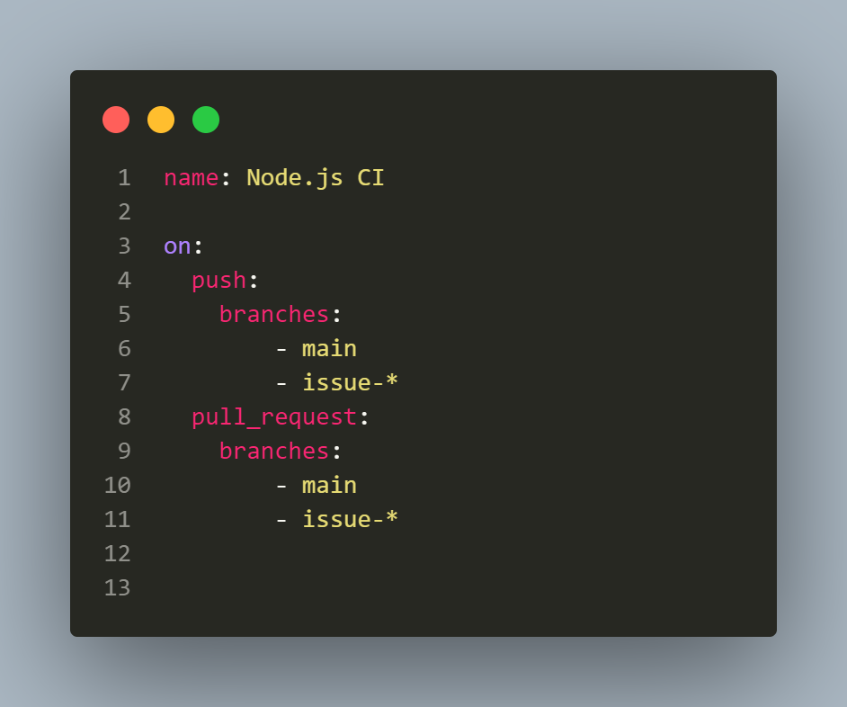
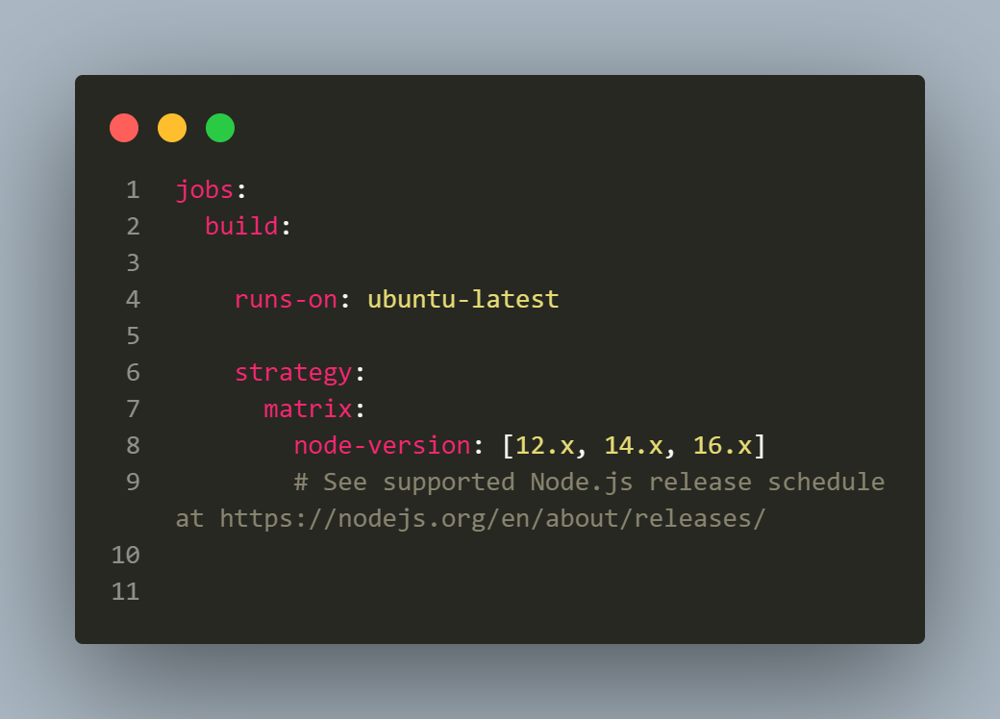
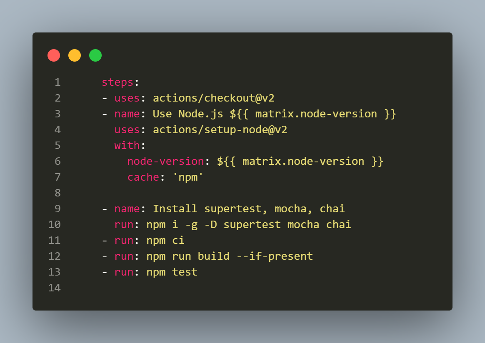
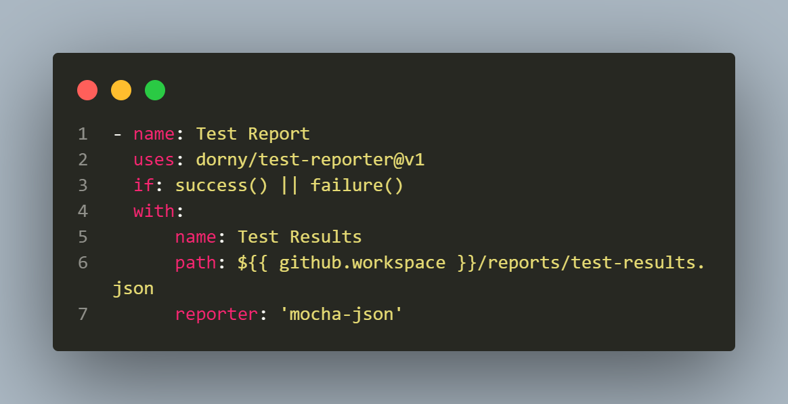

How to setup Github Actions for nodejs project?

Introduction
Yesterday I was doing a POC on Super Test, an HTTP assertions library that allows you to test your APIs using Javascript. A thought came to my mind to add the pipeline using Github Actions, since my code is checked-in on Github. It will help me running the regression tests on the pipeline and provide me an advantage to check for the failing cases/issues in the code before I merge anything to main branch. Hence, I added the github action workflow in the repository.
In this blog, I would be providing the walkthrough of how to setup github actions for nodejs. It would be a guiding tutorial for the folks who want to use this feature and would be a documentation for me as well.
What is github actions?
As per the Github actions website, GitHub Actions is a continuous integration and continuous delivery (CI/CD) platform that allows you to automate your build, test, and deployment pipeline. You can create workflows that build and test every pull request to your repository, or deploy merged pull requests to production.
GitHub Actions goes beyond just DevOps and lets you run workflows when other events happen in your repository. For example, you can run a workflow to automatically add the appropriate labels whenever someone creates a new issue in your repository.
GitHub provides Linux, Windows, and macOS virtual machines to run your workflows, or you can host your own self-hosted runners in your own data center or cloud infrastructure.
How to setup github actions workflow?
Setting up github actions is very easy, there is no complex tasks or files that you need to create. It can be setup in the following simple steps:
Step 1 - Create a Github Repo and check-in all your code on Github
Creating and checking all your code on Github is again simple task. Checkout the link here which will help you to create a repository and check in your code on github.
Step 2 - Go To Actions Tab and select appropriate workflow depending on your programming language
Once the Github repository is created and all the code is checked-in. You will have to click on the Actions Tab as shown in the pic below.

Next, you need to select the workflow depending on the programming language of your project. Here, I would be selecting Node.js since my project is Nodejs based. I have selected the third option in the first row and clicked on Configure.

Once you click on Configure your will be taken to a page where github will auto create a workflow file as per the option you selected and accordingly if you want, you can make the changes in the file as per your needs to install packages, build the project and run the tests. I liked this as it is totally customizable and provides all the implementation in your hands to choose and add the steps as per your requirement.

Once you have updated all the steps and the commands you want to run within the workflow you can commit the changes by clicking on Green button called Start Commit button on top right hand.
It will take you to the Actions Tab where you will be able to see the Workflow in Action which you just created.
On the left hand side you will be shown the workflow name, in my case it is Node.js CI and on the right hand side in the Tab you should be seeing the workflow running check a yellow dot with commit message in the below screenshot:

Now, if you click on the workflow run, it will take you deeper in the run and you should be able to checkout what all things are cooking inside in the run. In my case, it shows 3 jobs running, i.e.
- build (12.x)
- build (14.x)
- build (16.x)
This is because as per my workflow, I have selected to run my build and tests on 3 different versions of Nodejs, namely, 12, 14 and 16.

On the right hand pane, if you click the show all jobs tab, you will be further taken into the job details. Below is the screenshot of jobs running in Node 16:

Once all the jobs are complete, Test Report will be published as a part of next step. I have configured mocha-json reporter since I am using mocha to run the tests:

Understanding the workflow yml file
Checkout the Worflow file in the Github repository here
Workflow yml file can be found inside the .github/workflows folder, filename is node.js.yml.
Let me explain you what the content of the yml file looks like and what it means.

First of all in the workflow you need to assign a name to the workflow which can be done using the name tag on the first line of the file.
Next, we need to tell workflow when it should run, for that on tag can be used alongwith telling the workflow when to get started.
Here, I have set to run whenever a code is pushed to main branch and also when code is pushed to a brach having name like issue- since I create the fix branches name with issue- following the issue number.
Also, it will run whenever a Pull Request is raised on main or issue- branches.

Next, we need to setup the jobs to be run. For this we need to provide the machine image we would be using for running the build. In our case, it will be running on ubuntu-latest. The next is the strategy to run the build. We need to set the node version on which we need to run the tests. I found this very flexible and amazing, it was because we can provide multiple node versions. In our case, it will be following 3 node versions:
- Node 12.x
- Node 14.x
- Node 16.x
This is amazing as it helps us run the build on multiple environments thereby allowing us to leverage our build and test startegy on multiple node verions which is a kind of complex thing to do on local machine.
Once the machine and nde versions are set. We can continue to set the steps we need to run the build and test stage.

actions/checkout@v2>> This action checks-out your repository under$GITHUB_WORKSPACE, so your workflow can access it.actions/setup-node@v2will setup the node versions as defined in thebuild: strategywhere we have mentioned the different node versions we need for this build. These node version will be taken in consideration usingnode-version: ${{ matrix.node-version }}. In this Step, your github repository will be checked out, and node will be setup in the build machine. Now, your machine is setup and is ready to install and build what all npm packages you need for your project to build and run the tests.- In the next step, we will install
superTest,chaiandmochasince these packages are needed to build and run the tests. - Once packages are installed, we would be running the following commands, to package, build and run the tests.
- npm ci
- npm run build –if-present
- npm test
One point to mention here is, I have already added the script in the package.json to run the script with npm test. Here is the snippet of the test script from package.json, so when I run npm test it will call the following script:
"scripts": {
"test": "mocha **/*.spec.js && mocha --reporter json > reports/test-results.json"
}

In the end, I have added a Test-Report step which will be shown once all the tests are run in the workflow and will show the results so any user can checkout and see the summary of the tests run with its actual outcome. It uses dorny/test-reporter@v1, report will be generated if tests pass or fail,i.e everytime the workflow is run. It will pick data from the json file in the /reports/test-results.json file and mocha-json reporter format would be used to show the report.
Running the Workflow
As mentioned earlier, Workflow would be run once the code is pushed to branch having name like issue or main branch.
This is how it looks:

Here is the how the workflow jobs are shown in case a PR is raised:

Conclusion
I hope you would have got a better understanding of how the Github Actions workflow works and how to set it up. Its a good way of setting up your own customized pipeline and automate the tedious tasks which eats up most of your time.
If you have any queries or doubt about this please feel free to reach me and discuss the same.
– Faisal Khatri